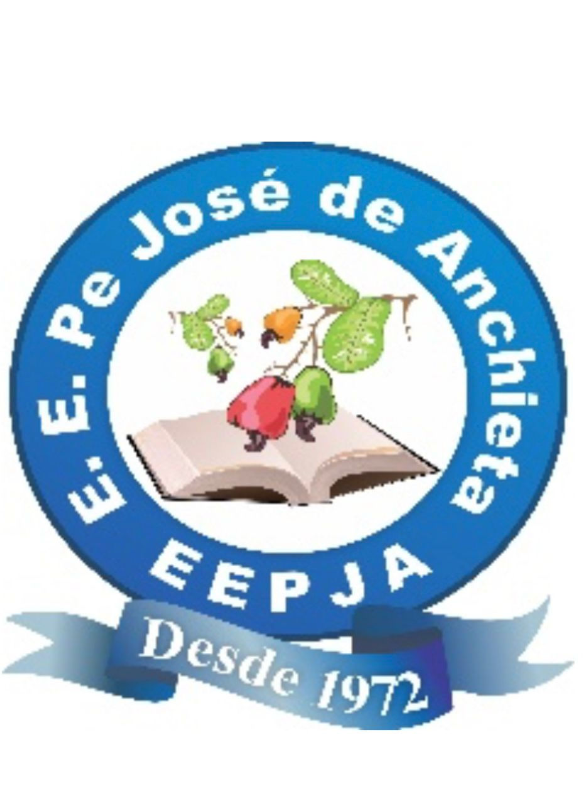

NutriEscola

• 1kg de comida = 1.000 litros de água jogados fora
• Contribui para o aquecimento global
• Desperdiça o trabalho de muitas pessoas
• Preserva recursos naturais
• Ajuda a combater a fome
• Economiza dinheiro da escola que pode ser investido em melhorias
Meta da escola: reduzir o desperdício em 50% até o final do ano letivo
Sirva-se em pequenas quantidades primeiro. Você sempre pode repetir se ainda estiver com fome!
Experimente antes de recusar. Às vezes julgamos pelo visual, mas o sabor pode surpreender!
Converse com as merendeiras sobre suas preferências. Elas podem te ajudar a escolher melhor.
Participe da enquete diária. Sua resposta ajuda a preparar a quantidade certa de comida.
Ao desperdiçar comida, desrespeitamos quem não tem o que comer e também o meio ambiente. Um prato bem servido é sinal de consciência, responsabilidade e respeito. Faça sua parte!
Na nossa escola, estamos comprometidos com os Objetivos de Desenvolvimento Sustentável da ONU, especialmente o ODS 2 (Fome Zero) e o ODS 12 (Consumo e Produção Responsáveis).
Você sabia? O alimento que você desperdiça hoje poderia alimentar um colega que veio para aula sem café da manhã. Pense nisso na próxima vez que for se servir.
Jogar comida fora na escola parece pouco, mas multiplique isso por todos os alunos, todos os dias, em todas as escolas do país. O impacto é devastador! Vamos mudar isso juntos.
Dicas para evitar o desperdício:
Desafio da Turma: A turma que reduzir mais o desperdício ganhará um dia especial com atividades ao ar livre!